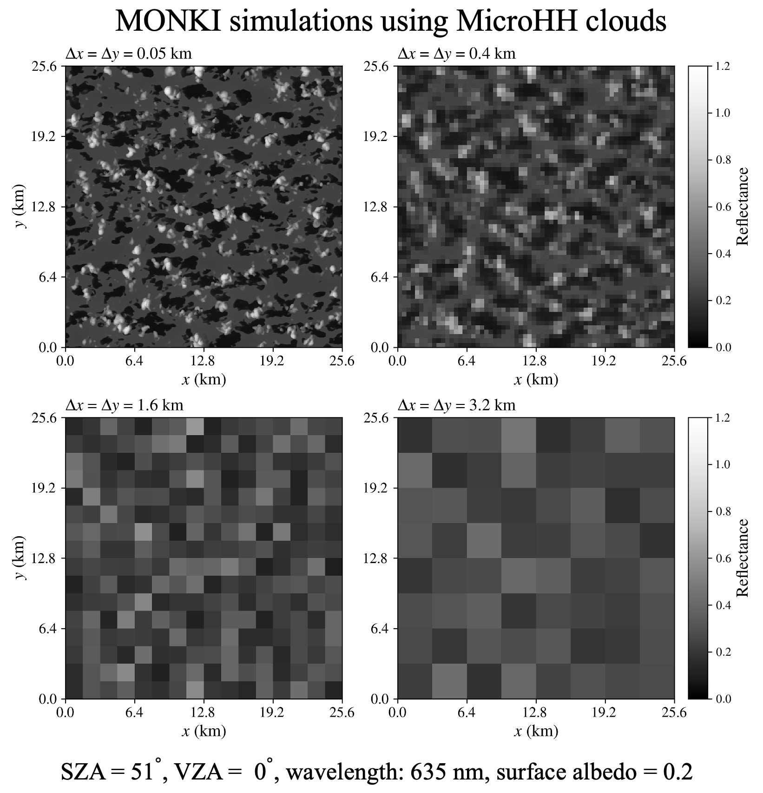

27 mei 2026
MONKI gebruikt bij KNMI om 3D-wolkeneffecten in weersatellietmetingen te onderzoeken
MONKI is gebruikt in een studie onder leiding van Job Wiltink om te kwantificeren hoe driedimensionale wolk-stralingsinteracties satellietschattingen van globale horizontale instraling beïnvloeden: de hoeveelheid zonlicht die een horizontaal oppervlak aan de grond bereikt.
Zulke 3D-effecten zitten vaak verscholen binnen grote satellietpixels. Licht kan horizontaal worden getransporteerd tussen bewolkte en onbewolkte delen van een scène, en wolkenschaduwen kunnen de instraling aan het oppervlak verlagen. Nu nieuwe geostationaire weersatellieten wolken met kleinere pixels waarnemen, worden deze effecten steeds belangrijker voor de interpretatie en correctie van satellietproducten voor instraling.
De studie combineert MONKI met realistische wolkenvelden uit het large-eddy-simulatiemodel MicroHH en laat zien hoe pixelgrootte, wolkenstructuur en horizontaal fotonentransport het satellietproduct voor instraling beïnvloeden.
